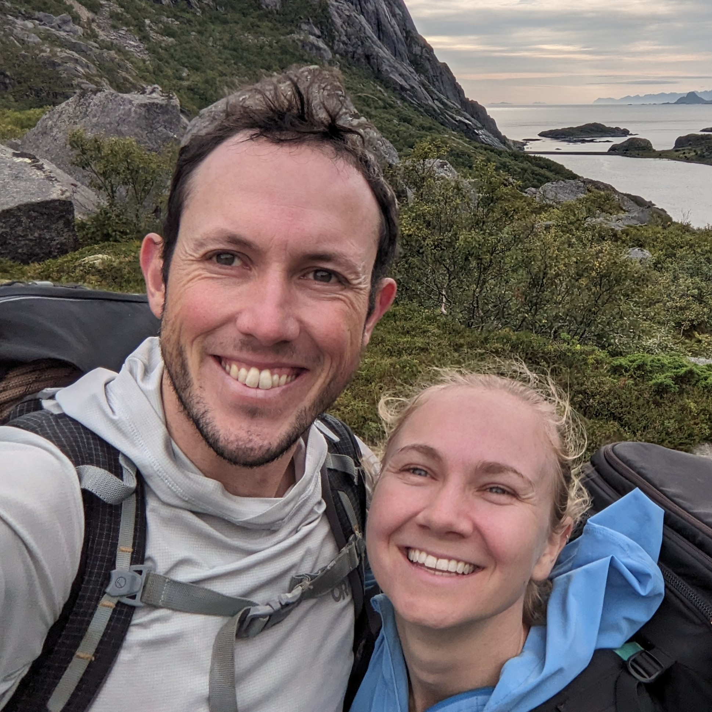
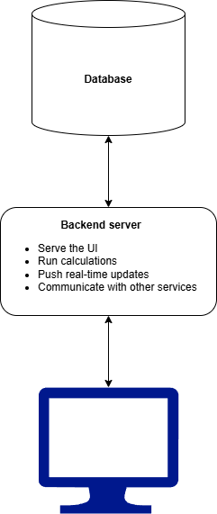
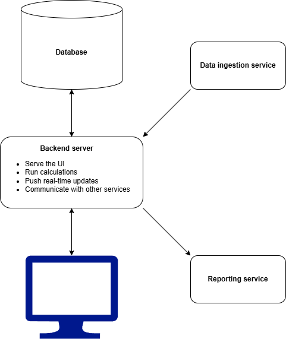
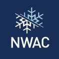

Rory Sullivan
Software Engineer II - Connectomics Visualization
Allen Institute - 16 April 2025
About Me

- From Ireland
- Moved to Seattle 2 years ago
- BSc Mathematics
- Software engineer for 4 years
- TypeScript, C#, Python, SQL, Rust
- Rock climbing, skiing
Overview
- Atlas
- Rust ray tracing engine
- Open source work
- Allen Institute
Abbey Capital
- Financial fund manager
- Built internal tools
Atlas
- Complete re-build of the company's internal fund accounting application
- TypeScript React frontend, C# ASP.NET backend, MySQL database
- Fully running in AWS
Atlas
-
Functionality:
- Calculate daily profit and loss
- Compare calculations to other parties
- Automate manual checks
- 6 different funds
- $7bn assets
Atlas


Atlas
- Specification
- Design
- Build
- Parallel testing
- Production
- Specification
- Design
- Build
- Parallel testing
- Production
Atlas
-
User feedback:
- To pie chart or not to pie chart?
- How do you align numbers?
or
1234.56
1234.56
543.21
543.21
Atlas
-
My contributions:
- CI/CD pipeline
- C# and React projects
- Automatic change propagation
- Real-time updates
- Reusable frontend components
Atlas
-
Results:
- 20x performance improvement (20 mins → 1 min)
- Modern user Interface
- Real-time updates
- Saved our users time
Atlas
-
Relevance:
- Experience delivering a real project
- Worked with subject matter experts
- Ability to collaborate with users
Rust Ray Tracer
- Passion project to build a ray tracer from scratch
- Based on the 'Ray Tracing in One Weekend' series
- Built with Rust
- Does CPU ray tracing
 Source:
Ray Tracing in One Weekend
Source:
Ray Tracing in One Weekend
What is ray tracing?
{kind=link}
Rust Ray Tracer

WebGL project
LinkRelevance
- Foundational knowledge of 3D graphics
- Combined with web and user interface experience
Open Source Work
Dry Rock
LinkNWAC - Avy

Why the Allen Institute?
- Open source / science
- Passion for 3D graphics